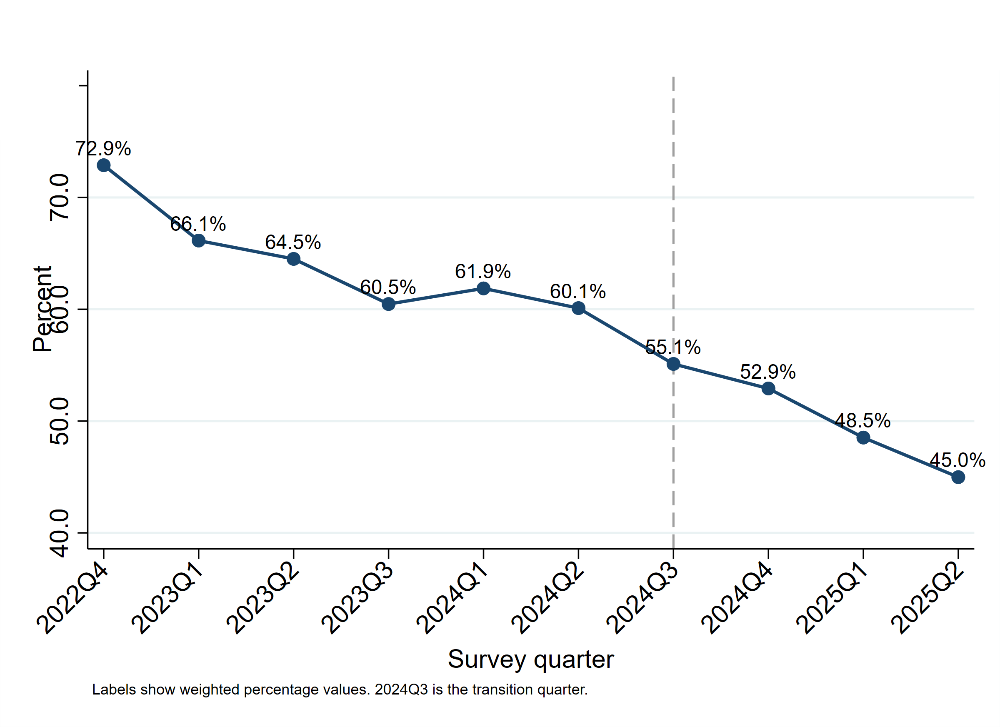
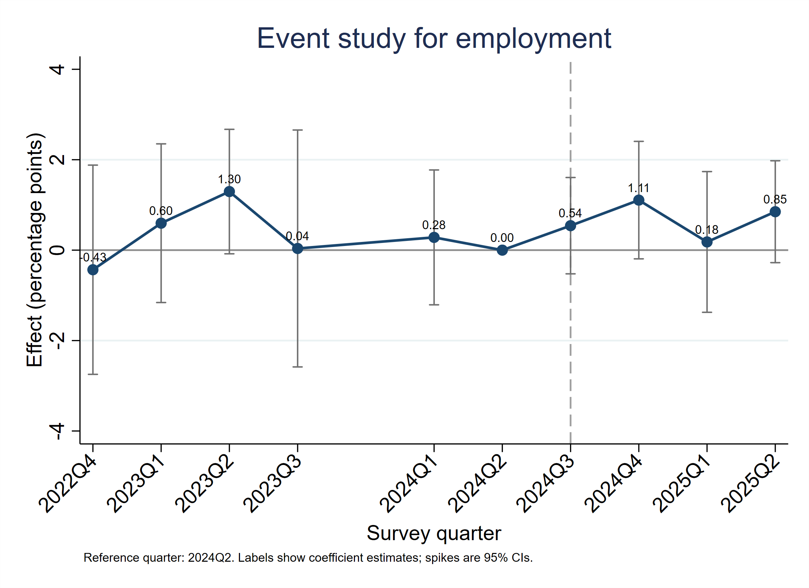
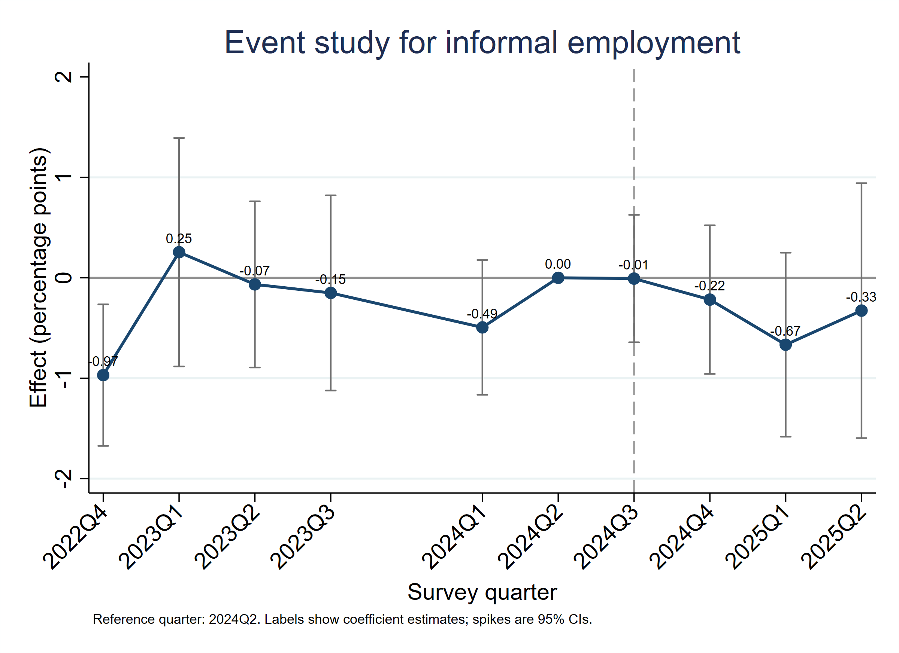
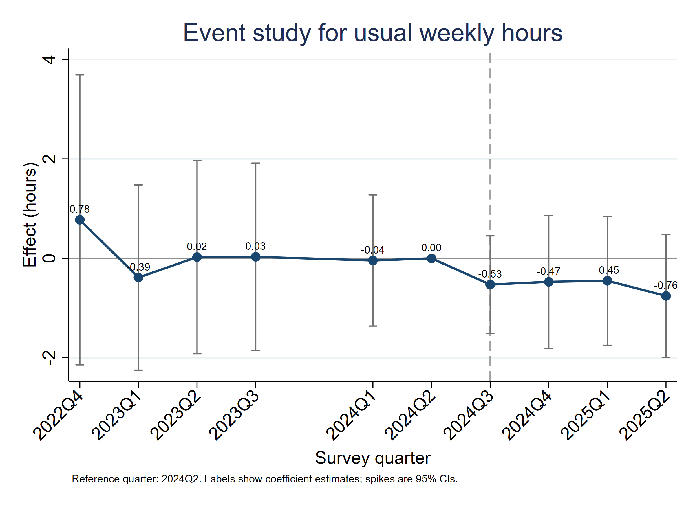
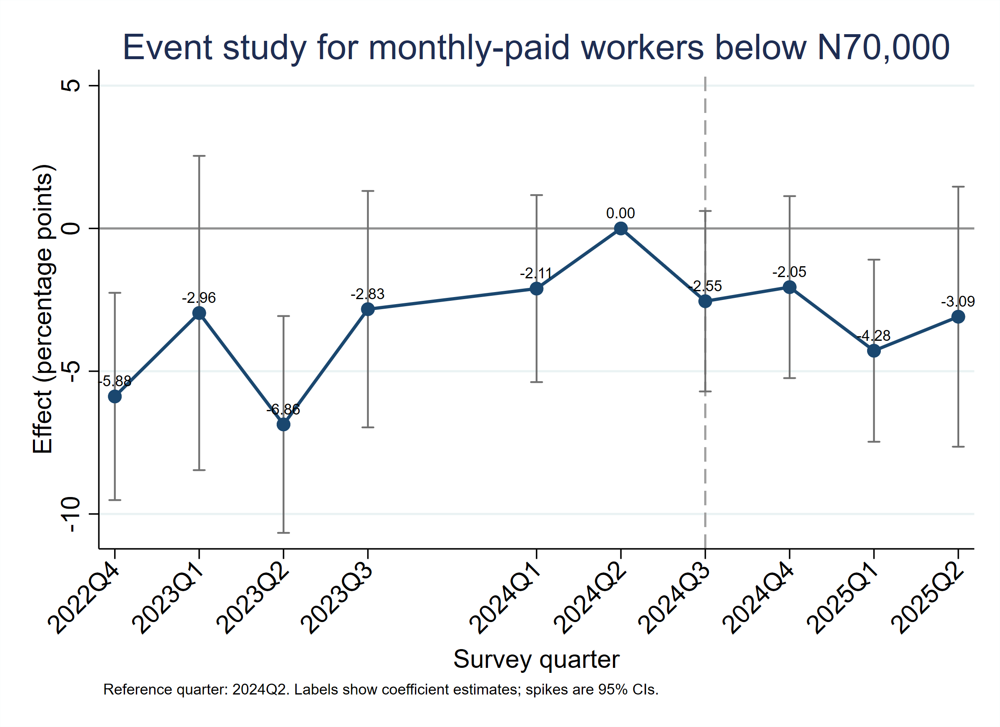

Introduction
Nigeria raised the statutory monthly minimum wage from ₦30,000 to ₦70,000 in 2024. The reform matters because a higher statutory floor can improve pay for low-wage workers, but the labour-market response may differ across places and workers when coverage and enforcement are uneven. In Nigeria, where informal employment is extensive, adjustment may occur through wages, hiring, hours, underpayment, or movement between formal and informal work rather than through one single employment response (National Bureau of Statistics, 2024a).
This portfolio study evaluates what can be learned from ten quarterly waves of Nigeria Labour Force Survey microdata. It deliberately separates descriptive evidence from causal evidence. The weighted share of valid monthly-paid wage employees earning below ₦70,000 declined during the reform period, but that change alone does not establish that the statutory increase caused the decline or that wage dispersion narrowed. Developing-country evidence similarly indicates that minimum-wage effects depend on how strongly the wage floor binds and how effectively it is enforced (Neumark & Munguía Corella, 2021).
Research question
The study asks whether states with greater pre-reform exposure to the ₦70,000 wage threshold experienced different post-reform changes from less-exposed states in wages, employment, working hours and informality.
The question is intentionally narrower than asking whether Nigeria's minimum-wage reform changed national employment or wages overall. Because every state was subject to the national reform, the econometric design does not contain an untreated-state control group. It therefore estimates differences in post-reform changes between more- and less-exposed states rather than the reform's total national effect.
Data and methodology
I use a quantitative quasi-experimental repeated-cross-section design. Ten public-use NLFS waves from 2022Q4 to 2025Q2 were harmonised at the individual level, producing 252,708 observations for people aged 15 years and above. National descriptive statistics are calculated directly from the survey-weighted microdata. For the policy regressions, the microdata are aggregated into outcome-specific state-quarter cells for Nigeria's 37 state-level units, including the FCT. Each state-quarter outcome is a survey-weighted mean or rate, and the regression weight is the sum of the NLFS survey weights contributing to that cell.
Study design at a glance
- Research question
- Did states with greater pre-reform exposure to the ₦70,000 wage floor experience different changes in wages, employment, hours and informality?
- Data
- Nigeria Labour Force Survey, 2022Q4 to 2025Q2, 10 observed quarters, 252,708 persons aged 15+.
- Treatment intensity
- State-level weighted share of valid monthly-paid wage employees earning below ₦70,000 in 2024Q1-Q2.
- Method
- Weighted state-quarter continuous-exposure difference-in-differences with state and quarter fixed effects, outcome-specific analytic cell weights, state-clustered standard errors, event-study pre-trend tests, and a youth triple-difference extension.
- Main identification caution
- The below-₦70,000 wage outcome does not satisfy parallel pre-trends, and formal wage employment also fails its pre-trend test at the 5% level.
Model specification
The continuous treatment-intensity variable is each state's weighted share of valid monthly-paid wage employees earning below ₦70,000 in 2024Q1-Q2. I rescale this measure as Exp10_s = 10 × Exposure_s, so a one-unit increase corresponds to a 10 percentage-point increase in pre-policy exposure. The baseline post period is 2024Q4-2025Q2, while 2024Q3 is treated as a transition quarter because the reform was agreed and legislated during that quarter.
Baseline model:
Y_st = α_s + λ_t + β(Post_t × Exp10_s) + ε_st
Y_st is the survey-weighted outcome for state s in quarter t; α_s and λ_t are state and quarter fixed effects; and β measures the differential post-reform change associated with greater pre-policy exposure. Standard errors are clustered by state. The reported rate coefficients are expressed in percentage points per 10 percentage-point increase in exposure, while the hours coefficient is expressed in weekly hours.
Event-study diagnostic:
Y_st = α_s + λ_t + Σ_{k ∈ K, k ≠ −1} β_k [1(EventTime_t = k) × Exp10_s] + ε_st
The event study uses 2024Q2 as the omitted reference quarter and preserves the missing 2023Q4 gap. Pre-reform interaction coefficients are jointly tested to assess the parallel-trends assumption. Robustness checks include an alternative timing specification that treats 2024Q3 as post, state-specific linear trends, a Q4-2024-only wage comparison that avoids the 2025 earnings-instrument change, and a youth triple-difference extension.
Earnings required separate harmonisation. Through 2024, the public-use NLFS records earnings in bands; for valid monthly-paid wage employees, bands 1-6 are below ₦70,000 and bands 7-9 begin at ₦70,000 or above. In the supplied 2025 files, exact earnings are reported for most respondents and the earlier band variable is used as a fallback when an exact amount is not reported. These two measurement regimes were harmonised before constructing the wage-threshold outcome.
| Quarter | Valid monthly-paid N | Below N70,000 | Band responses | Exact responses | 2025 band fallback |
|---|---|---|---|---|---|
| 2022Q4 | 1,791 | 72.9% | 2,609 | 0 | 0 |
| 2023Q1 | 1,757 | 66.1% | 2,400 | 0 | 0 |
| 2023Q2 | 1,724 | 64.5% | 2,185 | 0 | 0 |
| 2023Q3 | 1,754 | 60.5% | 2,139 | 0 | 0 |
| 2024Q1 | 1,977 | 61.9% | 2,560 | 0 | 0 |
| 2024Q2 | 1,753 | 60.1% | 2,226 | 0 | 0 |
| 2024Q3 | 1,635 | 55.1% | 2,035 | 0 | 0 |
| 2024Q4 | 1,686 | 52.9% | 2,051 | 0 | 0 |
| 2025Q1 | 1,593 | 48.5% | 0 | 1,514 | 460 |
| 2025Q2 | 1,501 | 45.0% | 0 | 1,279 | 511 |
Source: Harmonised NLFS public-use data, as reported in the full research article.
Outcome and exposure definitions
Table A1 reproduces the core analysis-variable definitions used in the estimations.
| Variable | Definition |
|---|---|
| Employment | 1 when the NLFS main-job routing identifies the respondent as employed. |
| Unemployment | Not employed, search/future-starter criterion satisfied, and available for work. |
| Informal employment | Operational NLFS-consistent indicator based on status in employment, employer social-insurance contributions, and business registration. |
| Usual weekly hours | Total usual hours across jobs where available, with main-job hours used as a fallback. |
| Monthly-paid below N70,000 | For 2022-2024, monthly-paid bands 1-6; for 2025, exact SJJ12 monthly amount below N70,000, with SJJ12a band fallback when exact earnings are refused. |
| State exposure | Weighted state share of valid monthly-paid wage employees below N70,000 in 2024Q1-Q2. |
| Main post period | 2024Q4-2025Q2; 2024Q3 treated as transition. |
| Alternative post period | 2024Q3-2025Q2. |
Source: Variables constructed from the NLFS questionnaire and corrected harmonised analysis dataset.
The analysis is fully reproducible from the supplied project package. It includes the corrected Version 3 harmonised Stata and CSV datasets, a data dictionary, Stata-generated tables, labelled figures and a do-file that recreates the reported outputs using built-in Stata commands. The underlying public-use data remain subject to the NBS access terms (National Bureau of Statistics, 2024b).
Findings and discussion
This portfolio version includes all seven empirical and variable-definition tables and all five labelled figures from the full research article. The underlying estimates have not been re-estimated or altered.
Key findings
- The weighted share of valid monthly-paid wage employees earning below ₦70,000 fell from 60.1% in 2024Q2 to 45.0% in 2025Q2.
- The main exposure-based estimates compare post-reform changes in more-exposed states with changes in less-exposed states; they do not estimate the reform’s total national effect, and they do not show statistically clear differential changes in employment, unemployment, informality, self-employment, or usual weekly hours.
- Formal wage employment and the wage-threshold outcome fail their relevant pre-trend diagnostics, so those post-period coefficients are not interpreted causally.
- The share earning below ₦70,000 declined descriptively, but that threshold statistic alone does not establish reduced wage dispersion; a stronger causal evaluation requires direct implementation or enforcement data and a longer post-reform horizon.
| Quarter | Employment | Unemployment | Informal share | Usual hours | Monthly-paid below N70,000 |
|---|---|---|---|---|---|
| 2022Q4 | 73.6% | 5.4% | 93.4% | 46.4 | 72.9% |
| 2023Q1 | 76.6% | 4.2% | 92.6% | 48.5 | 66.1% |
| 2023Q2 | 77.1% | 4.2% | 92.7% | 48.2 | 64.5% |
| 2023Q3 | 75.6% | 5.0% | 92.3% | 47.4 | 60.5% |
| 2024Q1 | 73.2% | 5.3% | 92.4% | 46.6 | 61.9% |
| 2024Q2 | 76.1% | 4.3% | 93.0% | 49.3 | 60.1% |
| 2024Q3 | 75.3% | 4.7% | 92.4% | 48.8 | 55.1% |
| 2024Q4 | 75.6% | 5.0% | 93.2% | 48.2 | 52.9% |
| 2025Q1 | 75.8% | 5.2% | 92.3% | 46.9 | 48.5% |
| 2025Q2 | 74.1% | 5.3% | 92.7% | 47.5 | 45.0% |
Source: Harmonised NLFS public-use data, weighted national estimates reported in the full research article.
The share earning below ₦70,000
Among valid monthly-paid wage employees, the weighted share earning below ₦70,000 fell from 60.1 percent in 2024Q2 to 55.1 percent in 2024Q3, 52.9 percent in 2024Q4, 48.5 percent in 2025Q1 and 45.0 percent in 2025Q2. This decline is economically meaningful as a threshold statistic, but the series was already moving downward before the reform. It also does not, by itself, demonstrate that overall wage dispersion narrowed.

Exposure-gradient estimates
The main regressions compare post-reform changes in more-exposed states with changes in less-exposed states; they do not estimate the reform's total national effect. Per 10 percentage-point higher pre-policy exposure, the estimated differential change is +0.563 percentage points for employment, -0.215 percentage points for unemployment, -0.164 percentage points for informal employment, -0.338 percentage points for self-employment, +0.190 percentage points for formal wage employment, and -0.536 weekly hours. None of these baseline coefficients is statistically significant at conventional levels.
| Outcome | Effect per 10pp exposure | Clustered SE | p-value | Pre-trend p-value |
|---|---|---|---|---|
| Employment rate | 0.563 | 0.478 | 0.239 | 0.154 |
| Unemployment rate | -0.215 | 0.311 | 0.490 | 0.091 |
| Informal employment share | -0.164 | 0.454 | 0.717 | 0.083 |
| Self-employment rate | -0.338 | 0.380 | 0.374 | 0.098 |
| Formal wage employment rate | 0.190 | 0.138 | 0.170 | 0.039 |
| Usual weekly hours | -0.536 | 0.554 | 0.333 | 0.846 |
| Below N70000 among monthly-paid wage employees | -2.032 | 1.342 | 0.130 | <0.001 |
Note: Rate effects are in percentage points per 10-percentage-point higher pre-policy state exposure. These are differential changes between more- and less-exposed states, not the national reform effect. Source: Stata outputs reproduced in the full research article.



The wage-threshold event study is included for completeness; its joint pre-trend diagnostic fails, so its post-reform coefficients should not be interpreted causally.

The evidence should therefore not be summarised as showing that the reform had no effect. The more precise conclusion is that this state-exposure design does not detect statistically clear differential post-reform changes in the broad labour-market outcomes between more- and less-exposed states over the observed period. Comparable developing-country studies also report heterogeneous responses, with enforcement, worker vulnerability and firm size shaping whether adjustment appears in wages, employment or informality (García et al., 2025).
Identification diagnostics
A causal difference-in-differences interpretation requires more- and less-exposed states to have sufficiently comparable pre-treatment trends. The wage-threshold outcome fails its joint pre-trend diagnostic, and formal wage employment also fails at the 5 percent level. Those coefficients are therefore not interpreted as causal differential effects. The defensible wage statement is descriptive: the weighted share of valid monthly-paid wage employees earning below ₦70,000 declined during the reform period.
This caution is consistent with evidence from other developing economies. Large statutory increases may raise wages without aggregate job loss while still increasing informal employment for vulnerable workers, particularly where compliance differs across firms and worker groups (Işık et al., 2020). Recent systematic evidence likewise suggests that minimum wages can improve compensation for precarious workers without producing uniform changes in employment security (Håkansta et al., 2025).
Robustness and heterogeneous responses
The full sensitivity checks are reproduced below to distinguish the timing and specification alternatives from the baseline state-exposure estimates.
| Outcome | Alt. timing effect | Alt. p | State-trend effect | State-trend p |
|---|---|---|---|---|
| Employment rate | 0.524 | 0.243 | 1.060 | 0.345 |
| Unemployment rate | -0.110 | 0.709 | -0.477 | 0.360 |
| Informal employment share | -0.067 | 0.847 | -0.367 | 0.432 |
| Self-employment rate | -0.512 | 0.192 | 0.533 | 0.638 |
| Formal wage employment rate | 0.155 | 0.181 | 0.163 | 0.655 |
| Usual weekly hours | -0.532 | 0.301 | -0.205 | 0.832 |
| Below N70000 among monthly-paid wage employees | -1.949 | 0.073 | -3.283 | 0.398 |
Note: These are alternative exposure-gradient specifications, not estimates of the nationwide reform effect. Source: Stata results in the full research article.
Treating 2024Q3 as a post-reform quarter and adding state-specific trends do not produce statistically clear differential changes for the main labour-market outcomes. Interpret the estimated wage-threshold relationships cautiously because its pre-trend test fails.
| Outcome | Q4-2024 effect | Clustered SE | p-value |
|---|---|---|---|
| Employment rate | 0.972 | 0.639 | 0.128 |
| Unemployment rate | -0.321 | 0.382 | 0.401 |
| Informal employment share | 0.036 | 0.416 | 0.932 |
| Self-employment rate | -0.261 | 0.667 | 0.695 |
| Formal wage employment rate | 0.186 | 0.191 | 0.329 |
| Usual weekly hours | -0.461 | 0.680 | 0.498 |
| Below N70000 among monthly-paid wage employees | -0.892 | 1.343 | 0.507 |
Note: The wage-threshold outcome is observed under the pre-2025 earnings-band instrument. Source: Stata results in the full research article.
The Q4-2024-only check avoids comparing across the 2025 earnings-instrument change. The below-₦70,000 estimate is not statistically significant (p = 0.507).
| Outcome | Youth differential | p-value | DDD pre-trend p |
|---|---|---|---|
| Employment rate | 0.441 | 0.737 | 0.166 |
| Unemployment rate | -0.715 | 0.210 | 0.402 |
| Informal employment share | 0.377 | 0.468 | 0.024 |
| Self-employment rate | -0.309 | 0.764 | 0.278 |
| Formal wage employment rate | -0.367 | 0.098 | 0.031 |
| Usual weekly hours | -0.629 | 0.336 | 0.496 |
| Below N70000 among monthly-paid wage employees | 7.382 | 0.001 | <0.001 |
Note: The youth differential compares 15–24-year-olds with older workers along the state-exposure gradient. Failed pre-trend tests prevent a causal interpretation of the significant wage-threshold coefficient. Source: Stata results in the full research article.
Implications
For policy, the main implication is that a national legal wage is not the same as a uniform effective treatment. States with different pre-reform wage distributions, firm structures and enforcement environments may respond differently even though the statutory rate is national. African evidence places particular emphasis on coverage and compliance when interpreting minimum-wage policy in labour markets with substantial informality (Bhorat et al., 2017).
The results also suggest that implementation evidence should be treated as part of the policy itself rather than as a secondary detail. A stronger Nigerian evaluation would link labour-force outcomes to dated information on employer compliance, inspections, payroll implementation or public-sector and private-sector adoption. South African evidence shows that meaningful wage and poverty gains can coexist with weak compliance and limited employment loss, which makes enforcement intensity an important empirical variable rather than an assumption (Bassier & Ranchhod, 2024).
Limitations
The analysis has several limitations. First, because the reform is national, every state is legally treated. The exposure-gradient regressions therefore identify whether more-exposed states changed differently from less-exposed states, not the total national effect of raising the minimum wage. Second, the state exposure measure captures how binding the ₦70,000 threshold was before the reform, but it does not directly measure when employers implemented the new wage or how intensively it was enforced.
Third, the below-₦70,000 outcome does not satisfy the required pre-trend diagnostic, and formal wage employment also fails its pre-trend test at the 5 percent level. Fourth, the earnings instrument changes in 2025, requiring explicit harmonisation across measurement regimes; the Q4-2024-only robustness check reduces but does not eliminate that concern. Fifth, the available post-reform horizon is short. Finally, a fall in the share earning below ₦70,000 is a threshold finding and should not be interpreted as evidence that the overall wage distribution became less dispersed.
Conclusion
The clearest empirical finding is that the weighted share of valid monthly-paid wage employees earning below ₦70,000 fell materially during the reform period. The exposure-gradient regressions, however, do not show statistically clear differential post-reform changes between more- and less-exposed states in employment, unemployment, informality, self-employment or usual weekly hours. Because the wage-threshold outcome fails the parallel-trends diagnostic, the descriptive decline cannot be assigned causally to the reform using this design.
The main takeaway is therefore methodological as well as substantive: Nigeria's minimum-wage reform should be evaluated by separating national descriptive changes from differences associated with pre-policy exposure. Better implementation and enforcement data, together with a longer post-reform horizon, would make it possible to move from this exposure-based comparison toward a stronger estimate of the policy's effects.
References
Bassier, I., & Ranchhod, V. (2024). Can minimum wages effectively reduce poverty under low compliance? A case study from the agricultural sector in South Africa. Review of Political Economy, 36(2), 398-419. https://doi.org/10.1080/09538259.2024.2318957
Bhorat, H., Kanbur, R., & Stanwix, B. (2017). Minimum wages in Sub-Saharan Africa: A primer. The World Bank Research Observer, 32(1), 21-74. https://doi.org/10.1093/wbro/lkw007
García, G. A., Posso, C., & Arango, S. (2025). Minimum-wage effects, compliance, and firm size in a developing economy: Evidence from Colombia. The Developing Economies, 63(4), 301-327. https://doi.org/10.1111/deve.12443
Håkansta, C., Gunn, V., Kreshpaj, B., Matilla-Santander, N., Wegman, D. H., Hogstedt, C., Vignola, E. F., Muntaner, C., Bodin, T., O'Campo, P., & Lewchuk, W. (2025). What is the role of minimum wages in addressing precarious employment in the informal and formal sectors? Findings from a systematic review. International Journal of Social Determinants of Health and Health Services, 55(2), 124-147. https://doi.org/10.1177/27551938241286463
Işık, E., Orhangazi, Ö., & Tekgüç, H. (2020). Heterogeneous effects of minimum wage on labor market outcomes: A case study from Turkey. IZA Journal of Labor Policy, 10, Article 16. https://doi.org/10.2478/izajolp-2020-0016
Neumark, D., & Munguía Corella, L. F. (2021). Do minimum wages reduce employment in developing countries? A survey and exploration of conflicting evidence. World Development, 137, 105165. https://doi.org/10.1016/j.worlddev.2020.105165
National Bureau of Statistics. (2024a, November 12). Nigeria Labour Force Statistics Report Q2 2024. https://www.nigerianstat.gov.ng/
National Bureau of Statistics. (2024b, December 12). Nigeria Labour Force Survey Q2 2024: Study documentation and public-use microdata. NBS Microdata Catalog. https://microdata.nigerianstat.gov.ng/index.php/catalog/152